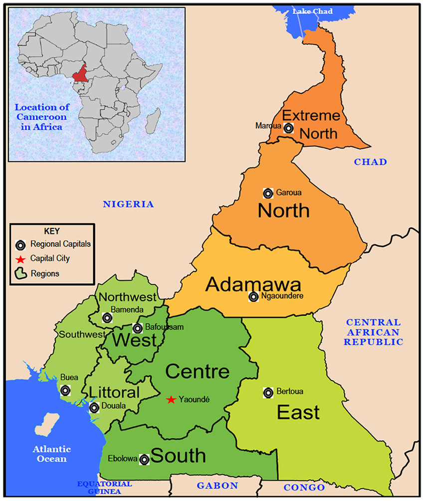

Cameroon, on the Gulf of Guinea, is a Central African country of varied terrain and wildlife. Its inland capital, Yaoundé, and its biggest city, the seaport Douala, are transit points to ecotourism sites as well as beach resorts like Kribi – near the Chutes de la Lobé waterfalls, which plunge directly into the sea – and Limbe, where the Limbe Wildlife Centre houses rescued primates.
Cameroon is located in Central and West Africa, between Nigeria to the west (1,975 km border), Chad to the North (1.116 km Border), Central African Republic to the east (901 km border) Gabon (south - 349 km border), Equatorial Guinea (south - 183 km border), Republic of Congo (south - 494 km border) and 400 km of Atlantic coast. Cameroon has an area of 475,442 km² and a population of 22,534,532 inhabitants. The interior is mountainous and spread to Adamawa and the North. The western, northwest and southwest regions are excellent areas for mountain/eco-tourism. They are dominated by active and extinct volcanoes. Mount Cameroon in Buea (elev. 4,100 m) is the highest mountain in West Africa, Mount Oku (elev. 3,011 m) near Bamenda, Mont Bamboutos (elev. 2,740 m) lies between the western and southern regions, Mount Mangwa (elev. 2,497 m). Some volcanoes have created crater lakes. These include the famous Lake Nyos, mythical Lake Awing, Lake is of all lakes, Lake Manengouba in Nkongsamba.
